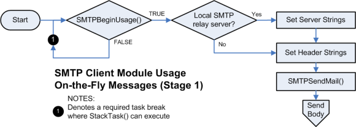
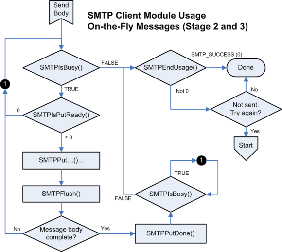

The SMTP client API is capable of sending messages that do not fit entirely in RAM. To do so, the application must manage its output state and only write as many bytes as are available in the buffer at a time. This example will walk through sending a longer message.
Sending longer messages is divided into three stages. The first stage configures the SMTP client to send the message. The second stage sends the message in small chunks as buffer space is available. The final stage finishes the transmission and determines whether or not the message was successful.
The following diagram illustrates the first stage:

- The first stage is largely similar to the first few steps in sending a short message. First, call TCPIP_SMTP_UsageBegin to verify that the SMTP client is available and to begin a new message. If FALSE is returned, the SMTP client is busy and the application must return to the main loop and wait to execute again.
- Next, set the local relay server to use as TCPIP_SMTP_CLIENT_MESSAGE.Server. If the local relay server requires a user name and password, set TCPIP_SMTP_CLIENT_MESSAGE.Username and TCPIP_SMTP_CLIENT_MESSAGE.Password to the appropriate credentials. If server parameters are not set, the stack will attempt to deliver the message directly to its destination host. This will likely fail due to SPAM prevention measures put in place by most ISPs and network administrators.
- Continue on to set the header strings as necessary for the message. This includes the subject line, from address, and any recipients you need to add.
- The next portion of the process differs. Ensure that TCPIP_SMTP_CLIENT_MESSAGE.Body remains set to its default (NULL). At this point, call TCPIP_SMTP_MailSend to open a connection to the remote server and transmit the headers. The application is now ready to proceed to the second stage and send the message body.
The following diagram provides an overview of stage two and three:

- Upon entering stage two, the application should call TCPIP_SMTP_IsBusy to verify that the connection to the remote server is active and has not been lost. If the call succeeds, call TCPIP_SMTP_IsPutReady to determine how many bytes are available in the TX buffer. If no bytes are available, return to the main loop so that StackTask can transmit the data to the remote node and free up the buffer.
- If space is available, any combination of the TCPIP_SMTP_Put, TCPIP_SMTP_ArrayPut and TCPIP_SMTP_StringPut functions may be called to transmit the message. These functions return the number of bytes successfully written. Use this value, along with the value originally returned from TCPIP_SMTP_IsPutReady to track how much free space remains in the TX buffer. Once the buffer is depleted, call TCPIP_SMTP_Flush to force the data written to be sent.
- The SMTP client module can_accept_as much data as the TCP TX FIFO can hold. This is determined by the socket TX buffer size.
- If the TX buffer is exhausted before the message is complete, return to the main loop so that stack may transmit the data to the remote node and free up the buffer. Upon return, go to the beginning of the second stage to transmit the next portion of the message.
Once the message is complete, the application will move to the third stage. Call
TCPIP_SMTP_PutIsDone to inform the SMTP client that no more data remains. Then call
TCPIP_SMTP_IsBusy repeatedly. Each time TRUE is returned, return to the main loop and wait for stack to execute again. Once FALSE is returned, the message transmission has completed and the application must call
TCPIP_SMTP_UsageEnd to release the SMTP client. Check the return value of this function to determine if the message was successfully sent.